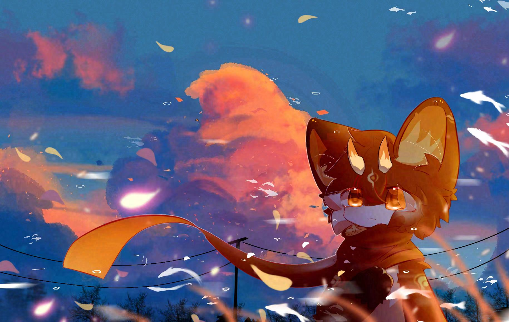
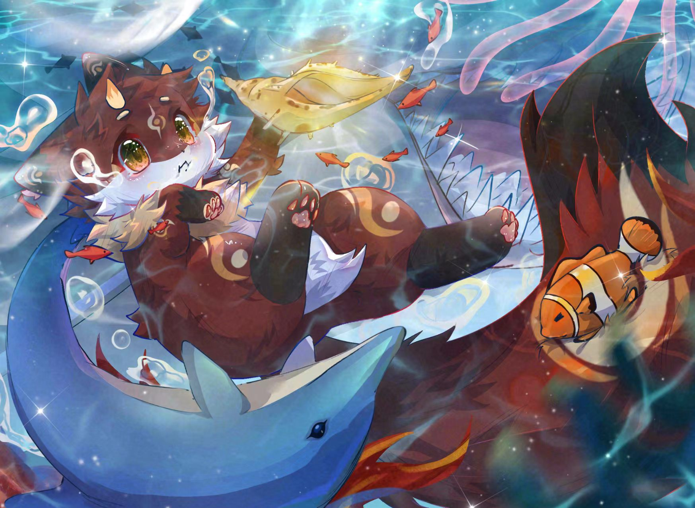

我是 纳棂，一个普普通通的人，也是一名 Furry 爱好者。
没有什么拿得出手的头衔，也不算什么厉害的人。 平时喜欢发发呆、听听歌、看看视频，偶尔记录一下生活里的小事。
比起被定义成什么样子，我更想认真过好每一天。 如果你也喜欢这样的节奏，欢迎来找我聊聊天、交个朋友。
平时喜欢的一些小事，凑成了生活里大部分的快乐。
没有什么大道理，只是认真对待生活的几件小事。
认真吃饭、认真睡觉、认真过好每一个普通的日子，这就是最重要的事。
不装、不假、不套路。喜欢就是喜欢，不喜欢就是不喜欢，简简单单最好。
一些瞬间与作品记录，点击可放大查看。
